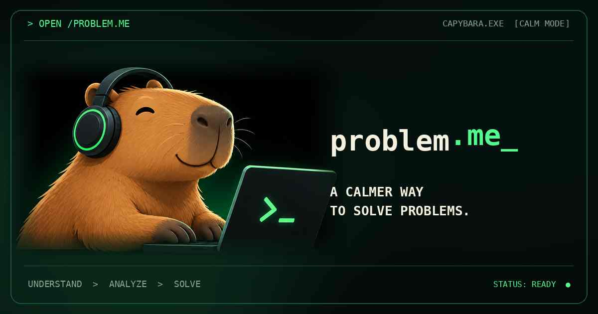

Same problems.Clearer thinking.
A calmer way to solve difficult problems. A friendly capybara, focused terminal interfaces, vivid green actions, and typography you can actually read.

Colour with purpose.
Neon leads the eye. Cream carries headlines. Jade keeps longer passages comfortable.
#010704#061810#35FF91#FAF5E2#D18A49Built for focus.
Terminal personality with a readable hierarchy. No decorative effects over body text.
Clear ideas come from good questions, not louder dashboards.
BODY / SYSTEM TEXTAsk a better question.
Four real frameworks.
All examples link to published working tools. Filter this preview to test the components.
5 Whys
Follow the cause beneath the symptom.
OPEN CASE → CASE #002Fishbone
Map the possibilities before choosing one theory.
OPEN CASE → CASE #003Pareto
See what matters most, not just what makes noise.
OPEN CASE → CASE #004Kepner–Tregoe
Make structured choices with clear criteria.
OPEN CASE →4 techniques shown
No examples match this filter.
Calm by design. Private by default.
Respect the product
The redesign preserves the actual techniques, privacy behaviour, browser-based investigations and evidence tools. Illustrations support understanding; they never replace functional controls.
Ship safely
This page demonstrates the new brand without restyling the live homepage or investigation workspaces. Each page gets its own reviewed migration and responsive tests.